Media stays local
LOOK NATURAL. STAY ON MESSAGE.
Your notes,
right by the lens.
Read comfortably while keeping natural eye contact. CueUp does not upload your notes or recordings. Voice Follow may use your browser’s speech service.
REC 00:00
Listening · next word highlighted